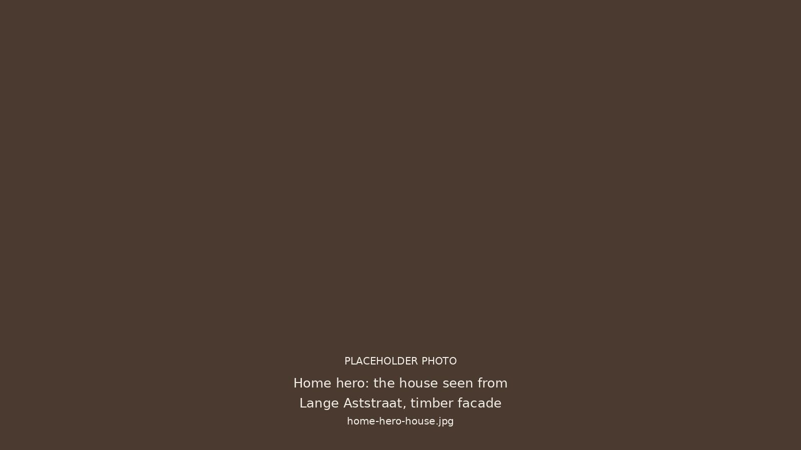
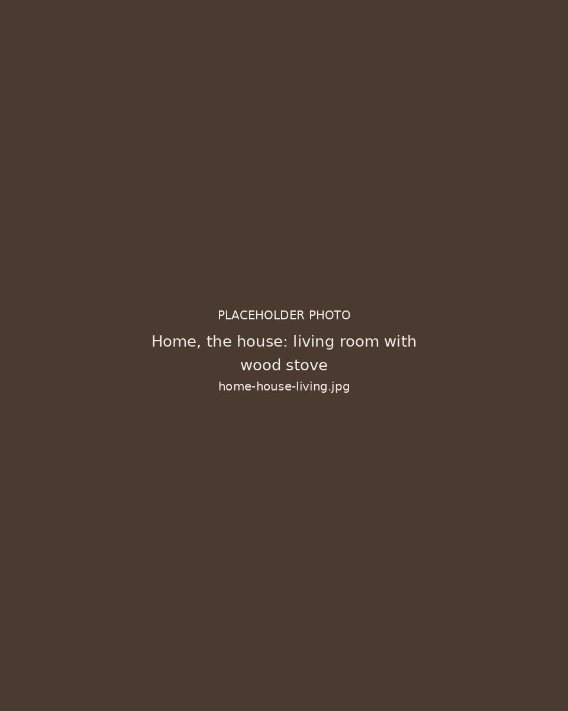
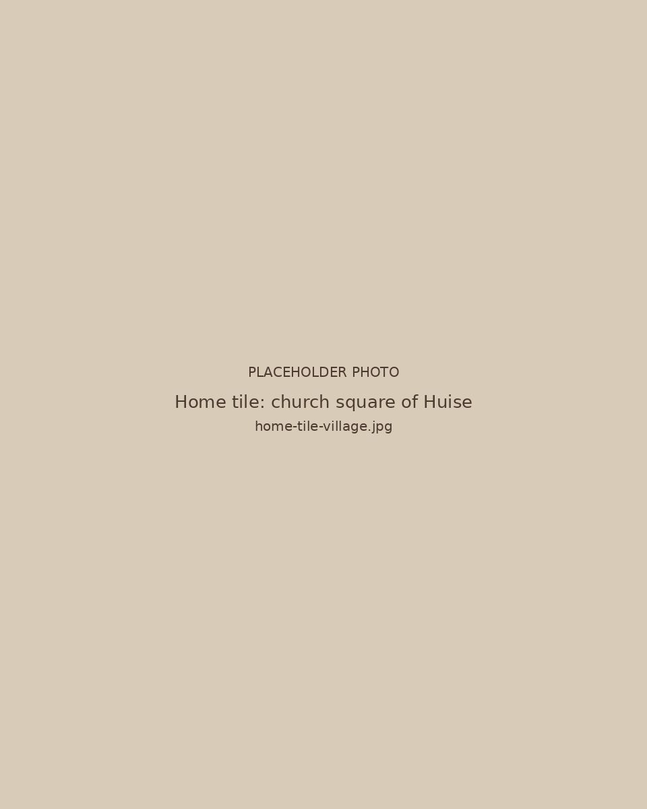
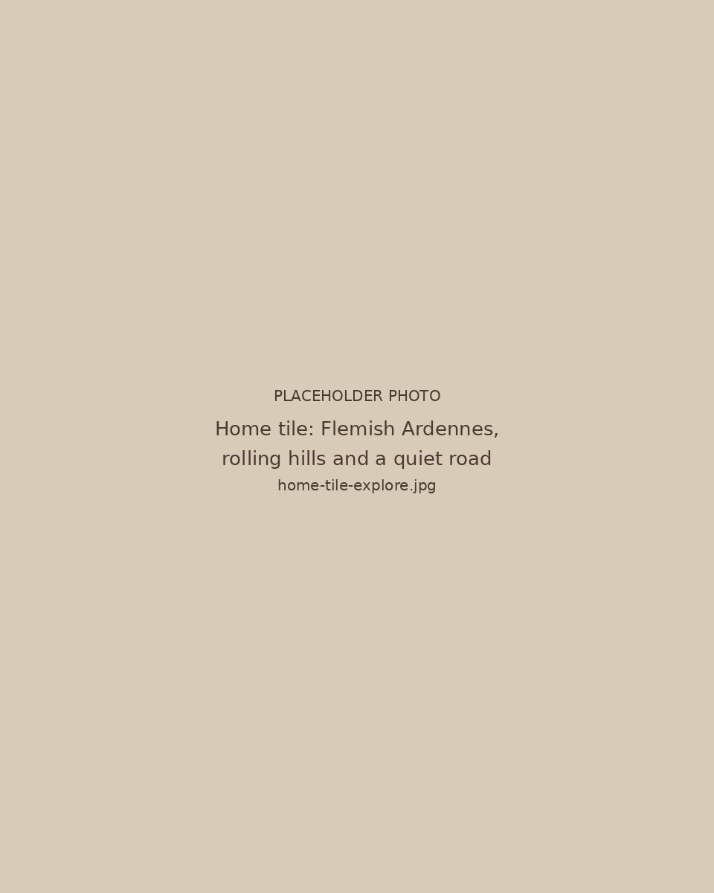
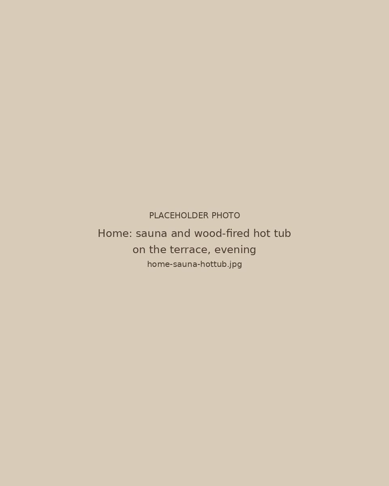

Een dorpshuis in VlaanderenA village house in FlandersUne maison de village en FlandreEin Dorfhaus in Flandern
Verblijf midden in een echt Vlaams dorp, vlak bij Gent en de Vlaamse Ardennen.
A stay in the heart of a real Flemish village, near Ghent and the Flemish Ardennes.
Un séjour au cœur d'un vrai village flamand, près de Gand et des Ardennes flamandes.
Ein Aufenthalt mitten in einem echten flämischen Dorf, nahe Gent und den Flämischen Ardennen.
Beschikbaarheid en boekenAvailability and bookingDisponibilités et réservationVerfügbarkeit und BuchungNo.4 Lange Ast is geen vakantiewoning in de natuur. Het is een huis in een dorp. Een plek waar het leven gewoon doorgaat. Waar mensen elkaar groeten op straat en de dag vanzelf begint. Je wordt hier wakker en het dorp is al bezig. Je trekt erop uit, te voet of met de fiets, richting Gent of de Vlaamse Ardennen. Of je blijft gewoon even hangen. En 's avonds kom je terug. De sauna warmt op. Het dorp valt stil. Een eenvoudig verblijf, midden in het leven.
No.4 Lange Ast is not a holiday home in the countryside. It is a house in a village. A place where life simply carries on. Where people greet each other in the street and the day begins on its own. You wake up here and the village is already going. You head out, on foot or by bike, towards Ghent or the Flemish Ardennes. Or you just stay a while. And in the evening you come back. The sauna heats up. The village falls quiet. A simple stay, right in the middle of life.
No.4 Lange Ast n'est pas une maison de vacances en pleine nature. C'est une maison dans un village. Un endroit où la vie suit simplement son cours. Où les gens se saluent dans la rue et où la journée commence d'elle-même. Vous vous réveillez ici et le village est déjà en mouvement. Vous partez, à pied ou à vélo, vers Gand ou les Ardennes flamandes. Ou vous restez simplement un moment. Et le soir, vous rentrez. Le sauna chauffe. Le village se tait. Un séjour simple, au milieu de la vie.
No.4 Lange Ast ist kein Ferienhaus in der Natur. Es ist ein Haus in einem Dorf. Ein Ort, an dem das Leben einfach weitergeht. Wo man sich auf der Straße grüßt und der Tag von selbst beginnt. Sie wachen hier auf und das Dorf ist schon in Bewegung. Sie ziehen los, zu Fuß oder mit dem Rad, Richtung Gent oder in die Flämischen Ardennen. Oder Sie bleiben einfach eine Weile. Und abends kommen Sie zurück. Die Sauna heizt auf. Das Dorf wird still. Ein einfacher Aufenthalt, mitten im Leben.

Het huisThe houseLa maisonDas Haus
Een modern houten huis voor 8 personen. Drie slaapkamers, een volledig uitgeruste keuken en een leefruimte met haard. Buiten een sauna en een houtgestookte hottub.
A modern timber house for eight. Three bedrooms, a fully equipped kitchen and a living room with a wood stove. Outside, a sauna and a wood-fired hot tub.
Une maison moderne en bois pour huit personnes. Trois chambres, une cuisine entièrement équipée et un séjour avec poêle à bois. À l'extérieur, un sauna et un bain nordique chauffé au bois.
Ein modernes Holzhaus für acht Personen. Drei Schlafzimmer, eine voll ausgestattete Küche und ein Wohnraum mit Holzofen. Draußen eine Sauna und ein holzbefeuerter Hot Tub.

DorpslevenVillage lifeVie de villageDorfleben Het kerkplein, de straat, het ritme van Huise.The church square, the street, the rhythm of Huise.La place de l'église, la rue, le rythme de Huise.Der Kirchplatz, die Straße, der Rhythmus von Huise.
OmgevingExploreEnvironsUmgebung De Vlaamse Ardennen aan de deur, Gent op 20 minuten.The Flemish Ardennes at the door, Ghent twenty minutes away.Les Ardennes flamandes à la porte, Gand à 20 minutes.Die Flämischen Ardennen vor der Tür, Gent in 20 Minuten.
Sauna, hottub en zwembadSauna, hot tub and poolSauna, bain nordique et piscineSauna, Hot Tub und Pool
Op het terras vind je een sauna op hout en een houtgestookte hottub. Het gedeelde verwarmde zwembad ligt hoger op het terrein, open van 10 tot 22 uur en verwarmd tot 29 graden van midden mei tot eind september.
On the terrace you will find a wood-burning sauna and a wood-fired hot tub. The shared heated pool sits higher on the grounds, open from 10 am to 10 pm and heated to 29 degrees from mid May to the end of September.
Sur la terrasse, vous trouverez un sauna au bois et un bain nordique chauffé au bois. La piscine chauffée partagée se trouve plus haut sur le terrain, ouverte de 10 à 22 heures et chauffée à 29 degrés de mi-mai à fin septembre.
Auf der Terrasse finden Sie eine Holzsauna und einen holzbefeuerten Hot Tub. Der gemeinsam genutzte beheizte Pool liegt etwas höher auf dem Grundstück, geöffnet von 10 bis 22 Uhr und von Mitte Mai bis Ende September auf 29 Grad beheizt.
Klaar voor een weekend in het dorp?Ready for a weekend in the village?Prêt pour un week-end au village ?Bereit für ein Wochenende im Dorf?
Bekijk de beschikbaarheid en stuur je aanvraag.
Check availability and send your request.
Consultez les disponibilités et envoyez votre demande.
Prüfen Sie die Verfügbarkeit und senden Sie Ihre Anfrage.